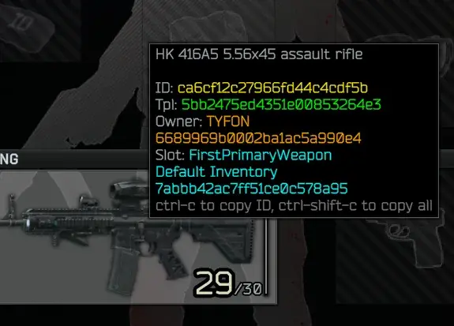
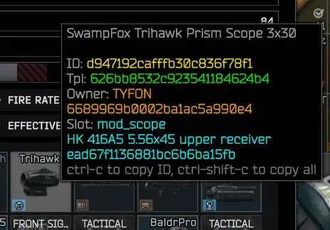
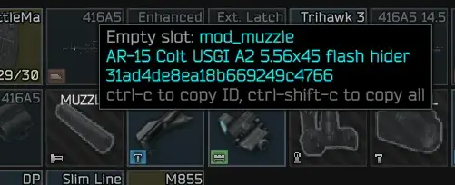
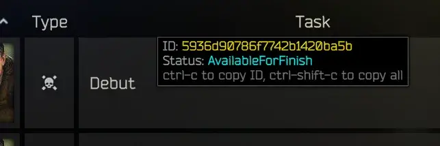
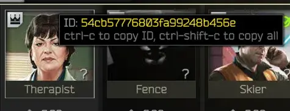

Mod
Debug Tooltip
- Downloads
- 3,182
- Favourites
- 4
- Mod lists
- 4
Features
- Adds item and item address information to tooltips
- Adds tooltips to trader icons and to quest rows that show those object’s IDs
- Adds tooltip to empty slots to show slot ID
- Copy to clipboard:
- Ctrl-C: Copy the ID of the item/trader/quest under the cursor
- Ctrl-Alt-C: Copy the template ID (tpl) of items, or parent ID of empty slots
- Ctrl-Shift-C: Copy the whole debug tooltip
- Debug info and additional tooltips are enabled/disabled through the F12 menu or by pressing F9 (configurable)
Installation
- You’ll figure it out, I’m sure.
Some previews





Version
4.0.0
SPT ~4.0.0
Fika: unknown
914 downloads10.1 KB
Updated for SPT 4.0
VirusTotal: report 1
Version
3.0.0
SPT ~3.11.0
Fika: unknown
645 downloadsUnknown size
Updated for SPT 3.11 🚀
VirusTotal: report 1
Version
2.0.0
SPT ~3.10.0
Fika: unknown
222 downloadsUnknown size
Updated for SPT 3.10
VirusTotal: report 1